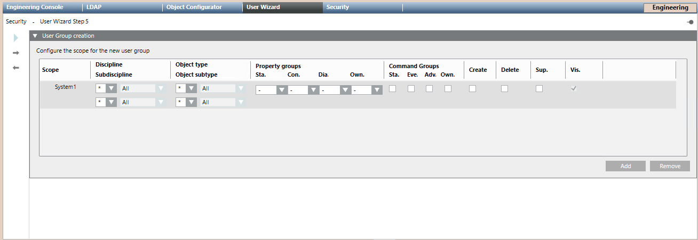

Configure the New User Group
- You are in the User Management Wizard step 5 – User Group creation.
- Under Configure the scope for the new user group, you can configure the scope for the new group. Define the scope rights as:
- Full local scope rights
- Reduced local scope rights
- Reduced pre-defined scope rights
- (Optional) Select Add and repeat the configuration for each additional scope you want create.
- (Optional) Select a scope of the table and select Remove to delete it.
NOTE: You cannot edit a user from the table. If you need to correct any parameter, you have to remove it and create it again. - Click
 .
.
